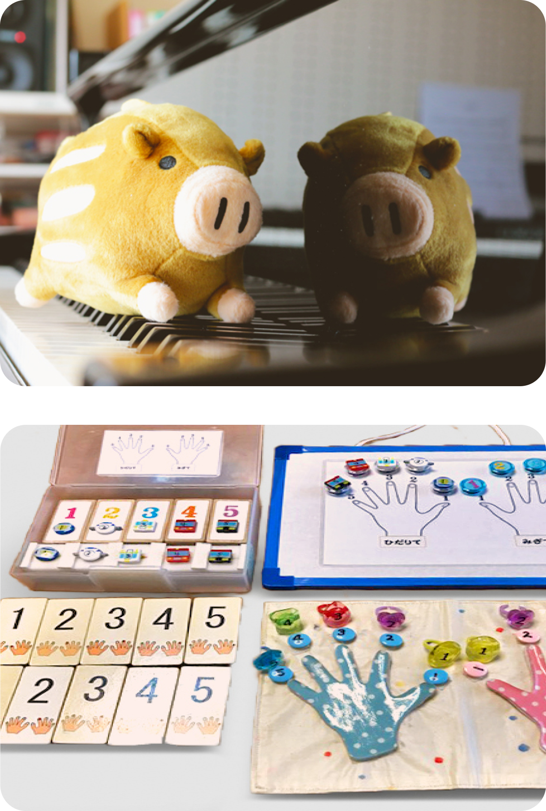
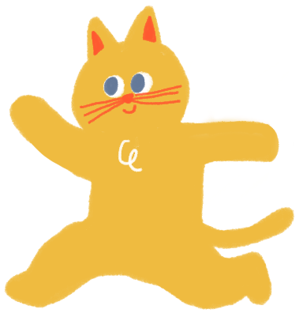

3歳以上の
お子さま
教材はピアノの教則本（成長に合わせた）、楽典を使用し、指のトレーニング・ソルフェージュ（聴音）・リトミックでピアノに触れる前の基礎力を培います。
ピアノを弾くだけでなく、リトミックの要素を取り入れて、身体を動かし色々な楽器を楽しみます。それぞれのお子さまに合わせて、教材、教具を選んだ楽しいレッスンで、音楽が大好きになるようお手伝いいたします。
聴覚の敏感期ですので、しっかり音を聴く活動を毎回取り入れています。また、音楽能力だけでなく、指の体操も行い、身体的・感覚的・知的に子どもたちの持っているあらゆる能力を引き出すための基礎作りをします。